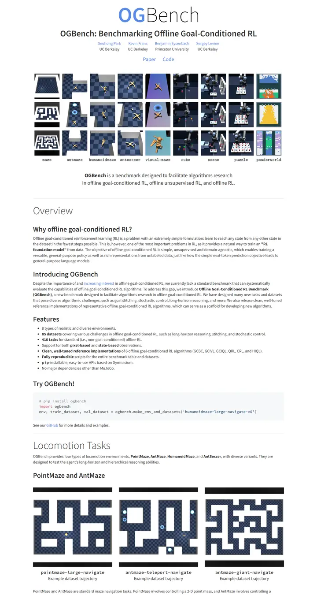

OGBench: Benchmarking Offline Goal-Conditioned RL
整った実験ノート。コーンフラワーブルーの一音節、小さな世界を並べたグリッド、そして細い罫線の下に飾らない文章。

表示されたページと照合済みです。
選んだ理由
2種類のウェイトを使ったワードマークのロゴ、キャプション付きで整った環境グリッド、中央揃えの一行の売り文句が、自信のある最初の画面を作っています。その後には明快な見出し階層とコードスニペットのブロックが続きます。控えめで洗練されています。
以下の説明と DESIGN.md 本文は英語です。コーディングエージェントが同じ一つの版を読めるよう、翻訳していません。
概要
カラーパレット
タイポグラフィ
Source Sans 3
OGBench: Benchmarking Offline Goal-Conditioned RL
Abstract · Method · Results · BibTeX — 0123456789
Source Code Pro
OGBench: Benchmarking Offline Goal-Conditioned RL
Abstract · Method · Results · BibTeX — 0123456789
余白と形
ページの構成要素
ガイドライン
似たスタイル

Representation Alignment for Generation: Training Diffusion Transformers Is Easier Than You Think
軽やかな Titillium のページ。タイトルの中から略称がフォレストグリーンで立ち上がる。

Flow Q-Learning
見出しはささやき、図が語る、すっきりした講義プリント。

EgoWorld: Translating Exocentric View to Egocentric View using Rich Exocentric Observations
付箋の索引がついた、よく手入れされた実験ノート。極細の罫線、一本の青い糸、余白には青緑のメモ。

Evolutionary Caching to Accelerate Your Off-the-Shelf Diffusion Model
亜鉛色の紙の上の製品基調講演。エレクトリックブルーの差し色がひとつ、ヒーローにはスライドデッキ、そして触って確かめられるプロット。

Factuality Matters: When Image Generation and Editing Meet Structured Visuals
青からタンジェリンへの朝焼けで装丁したベンチマークレポート。Georgia のマストヘッド、グラデーションのピル、自分で並べ替わるリーダーボード。

Monocular Normal Estimation via Shading Sequence Estimation
虹色の法線マップをまとった Nerfies 定番スタイル。グレーの文字と青い名前、語りはすべてラベンダーとシアンの表面に任せている。